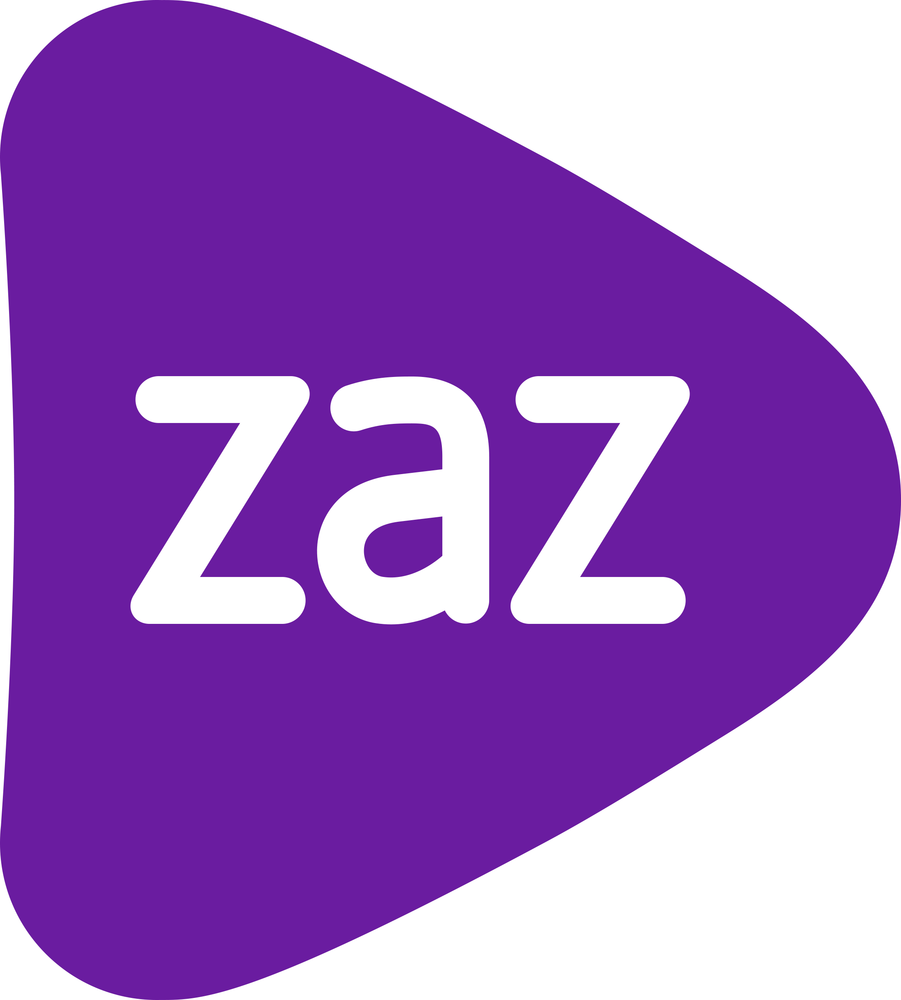

Design SystemZAZ Vendas · Versão 1.0
Produto, apresentação, relatório ou página avulsa: tudo parte daqui. Uma linha de CSS e a sua tela já é ZAZ.
#591da9 é a primária, nos dois temas. Os neutros saem todos da escala slate — nenhum cinza fora dela.
<link rel="stylesheet" href="https://apolo.zaz.vc/design-system/css/zaz.css"> <body class="zaz-root">
class="zaz-root" não é enfeite: é ela que liga
fundo, cor de texto, fonte e barra de rolagem. Sem ela o CSS carrega e não faz nada visível.